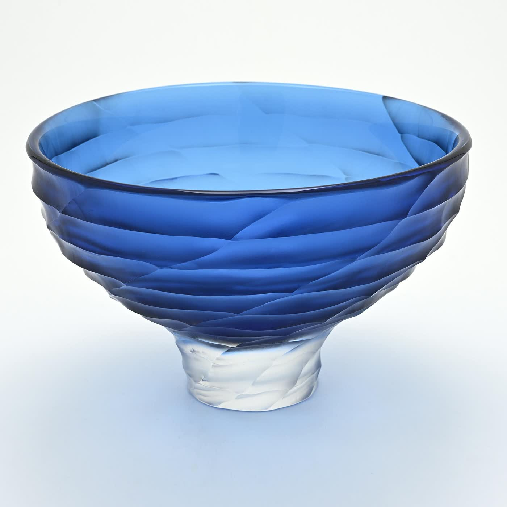
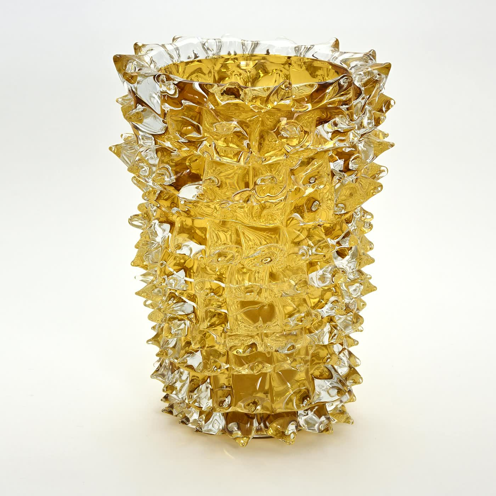
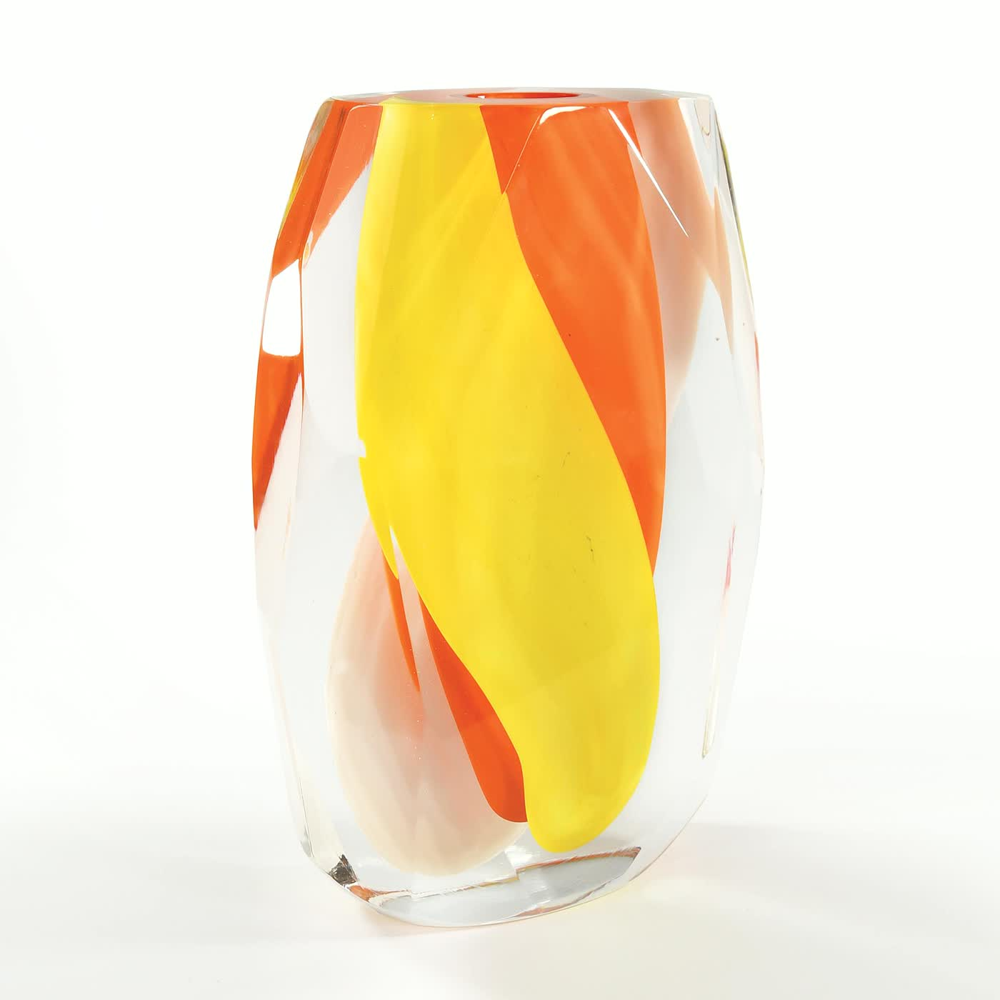
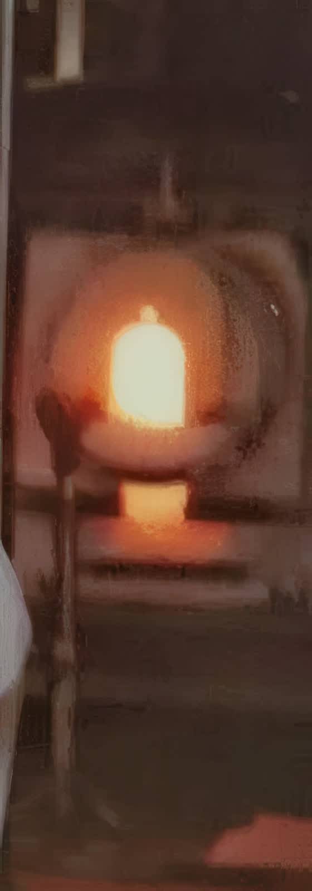
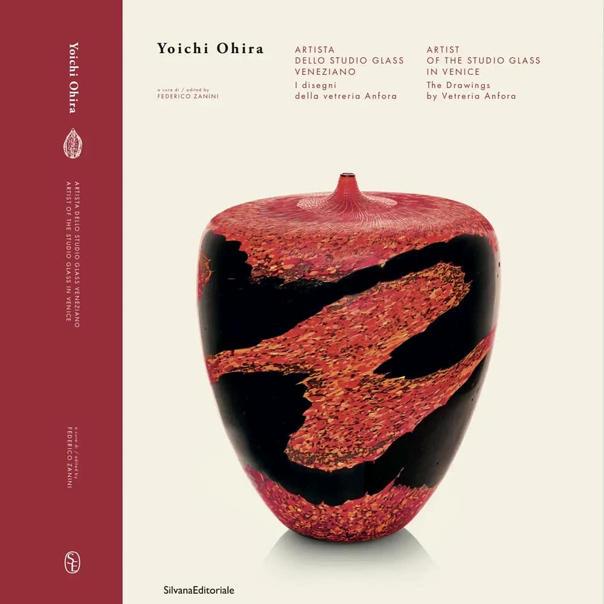
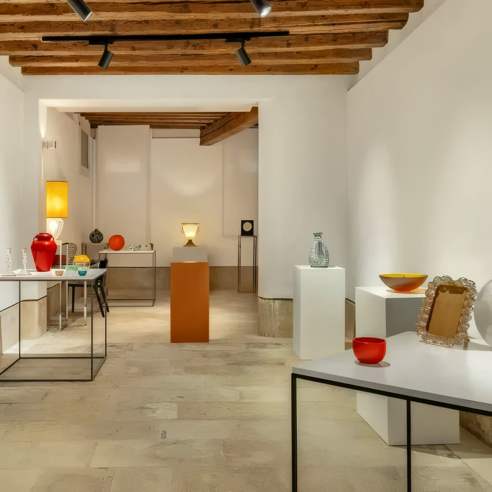

Giulio Ferro
Maestro fondatore
Figura paterna della fornace, membro di una famiglia di vetrai. Ha trasmesso i saperi tradizionali e il rigore artigiano, formando generazioni di soffiatori.
Murano · Sacca Serenella
Dal 1976 la fornace della famiglia Ferro. Qui gli artisti vengono a far diventare vetro le proprie idee, e i maestri lo soffiano a mano.



Cinquant'anni a Murano
Nel 1976 Renzo Ferro accende la fornace insieme al padre Giulio, maestro vetraio da generazioni. Pochi anni dopo, con il Primo Maestro Andrea Zilio, comincia a far lavorare in fornace artisti e designer venuti da fuori.
Era, testualmente, «una pratica poco diffusa negli anni '80, dando slancio a tutto il settore, nelle attività di ricerca e sviluppo». Da quella scelta sono nati quasi trent'anni di lavoro con Yoichi Ohira, la collezione disegnata da Marco Mencacci, e una lista di nomi che oggi passa ancora dalla porta della fornace.
Il resto è mestiere: canne, filigrane, sommersi, incalmi. E il fiato del maestro.
Il catalogo, una selezione
Tre collezioni: i vasi e le coppe, le sculture, e i quattordici pezzi disegnati da Marco Mencacci, di cui qui è esposta una selezione di tre. Tocca un'opera per aprirla e ingrandirla.
Ogni pezzo è unico e nasce in fornace, a Murano. Per dimensioni, tecnica e disponibilità di una singola opera, scrivi o telefona: risponde la fornace.
Chiedi di un'opera
Le radici
Renzo Ferro la mette in moto con suo padre Giulio, maestro vetraio da generazioni, in un momento in cui il vetro artistico di Murano è già conosciuto nel mondo ma ha bisogno di nuove energie. Da allora la fornace non ha cambiato isola: sta a Sacca Serenella, e ci lavora la famiglia.
Anfora non è solo un posto dove si produce. È anche un posto dove si insegna: i maestri che ci sono passati hanno trasmesso a nuove generazioni di vetrai tecniche antiche e rare, e la fornace ha lavorato fianco a fianco con scuole internazionali.
«Vetreria Anfora, con la propria sede sull'isola di Murano, dedica ogni giorno il proprio respiro al vetro.»dalle parole della vetreria
I maestri
Maestro fondatore
Figura paterna della fornace, membro di una famiglia di vetrai. Ha trasmesso i saperi tradizionali e il rigore artigiano, formando generazioni di soffiatori.
Primo Maestro
Nato a Venezia nel 1966, formato da Giulio Ferro, ha ottenuto in vetreria la qualifica di Primo Maestro. Ha insegnato alla Pilchuck Glass School e alla Scuola del Vetro Abate Zanetti di Murano.
Oggi guida la produzione
Comincia a sedici anni come garzone da Giovanni Cenedese. Per dieci anni, da Berengo Studio, lavora con artisti come Ai Weiwei, Tony Cragg, Zaha Hadid e Thomas Schütte. Oggi porta quella mano in Anfora.
Ricerca e produzione
Figlio di Renzo, sperimentatore di tutte le tecniche. Guarda avanti lavorando come mille anni fa, e porta avanti anche progetti a firma propria.
Il mestiere
Sono le lavorazioni complesse in cui i maestri della fornace sono specializzati. Andrea Salvagno predilige il soffio a mano, perché, dice la vetreria, «toccare» la materia significa comprenderla fino in fondo.
Due reti di canne incrociate, con una bolla d'aria imprigionata in ogni maglia.
Due pezzi soffiati a parte e saldati a caldo in un corpo solo, con la linea di giunzione perfetta.
Canne che hanno dentro un filo ritorto, accostate una all'altra fino a comporre il disegno.
Strati di vetro colati uno sull'altro: il colore acquista profondità dentro lo spessore.
Bacchette di vetro colorato preparate prima, poi rifuse dentro il pezzo mentre si lavora.
Il pezzo prende forma dal fiato del maestro e dal movimento della canna, un pezzo per volta.
Laboratorio di progetto
Dagli anni Ottanta Anfora lavora su commissione con artisti e designer di tutto il mondo: portano un progetto, i maestri lo eseguono. Sono passati di qui questi nomi.
Artisti e designer che hanno lavorato con Anfora: Yoichi Ohira, Ritsue Mishima, Emmanuel Babled, Melvin Anderson, Maria Grazia Rosin, Michele Burato, Cristiano Bianchin, Massimo Micheluzzi, Ivan Baj, Marco Mencacci, Tristano Nicolis di Robilant.

La monografia
Artista giapponese, vissuto a Venezia per oltre venticinque anni, oggi con opere nei principali musei del mondo. Il volume racconta l'artista e la fornace che rese possibili le sue opere più celebri, realizzate con i maestri Andrea Zilio e Giacomo Barbini.

Settembre 2025
Dal 13 al 21 settembre 2025, alla Galleria Diciotto di Venezia, sono state esposte le opere di dieci artisti contemporanei del vetro veneziano, realizzate con la collaborazione della vetreria. Ingresso gratuito, tutti i giorni dalle 11 alle 18.
Hai un progetto da realizzare in vetro? La fornace lavora anche su commissione: scrivici cosa hai in mente.
Dove siamo
Per informazioni su un'opera, per una commissione o per fissare un appuntamento, il modo più rapido è il telefono. Gli uffici rispondono dal lunedì al venerdì.
← → cambia opera+ ingrandisciEsc chiudi